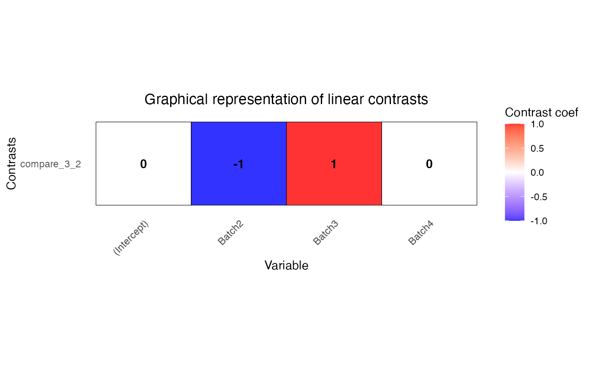

Fit linear mixed model for differential expression and preform hypothesis test on fixed effects as specified in the contrast matrix L
Usage
dream(
exprObj,
formula,
data,
L,
ddf = c("adaptive", "Satterthwaite", "Kenward-Roger"),
useWeights = TRUE,
control = vpcontrol,
hideErrorsInBackend = FALSE,
REML = TRUE,
BPPARAM = SerialParam(),
...
)Arguments
- exprObj
matrix of expression data (g genes x n samples), or
ExpressionSet, orEListreturned by voom() from the limma package- formula
specifies variables for the linear (mixed) model. Must only specify covariates, since the rows of exprObj are automatically used as a response. e.g.:
~ a + b + (1|c)Formulas with only fixed effects also work, andlmFit()followed bycontrasts.fit()are run.- data
data.frame with columns corresponding to formula
- L
contrast matrix specifying a linear combination of fixed effects to test
- ddf
Specifiy "Satterthwaite" or "Kenward-Roger" method to estimate effective degress of freedom for hypothesis testing in the linear mixed model. Note that Kenward-Roger is more accurate, but is *much* slower. Satterthwaite is a good enough approximation for most datasets. "adaptive" (Default) uses KR for <= 20 samples.
- useWeights
if TRUE, analysis uses heteroskedastic error estimates from
voom(). Value is ignored unless exprObj is anEList()fromvoom()orweightsMatrixis specified- control
control settings for
lmer()- hideErrorsInBackend
default FALSE. If TRUE, hide errors in
attr(.,"errors")andattr(.,"error.initial")- REML
use restricted maximum likelihood to fit linear mixed model. default is TRUE. See Details.
- BPPARAM
parameters for parallel evaluation
- ...
Value
MArrayLM2 object (just like MArrayLM from limma), and the directly estimated p-value (without eBayes)
Details
A linear (mixed) model is fit for each gene in exprObj, using formula to specify variables in the regression (Hoffman and Roussos, 2021). If categorical variables are modeled as random effects (as is recommended), then a linear mixed model us used. For example if formula is ~ a + b + (1|c), then the model is
fit <- lmer( exprObj[j,] ~ a + b + (1|c), data=data)
useWeights=TRUE causes weightsMatrix[j,] to be included as weights in the regression model.
Note: Fitting the model for 20,000 genes can be computationally intensive. To accelerate computation, models can be fit in parallel using BiocParallel to run code in parallel. Parallel processing must be enabled before calling this function. See below.
The regression model is fit for each gene separately. Samples with missing values in either gene expression or metadata are omitted by the underlying call to lmer.
Hypothesis tests and degrees of freedom are producted by lmerTest and pbkrtest pacakges
While REML=TRUE is required by lmerTest when ddf='Kenward-Roger', ddf='Satterthwaite' can be used with REML as TRUE or FALSE. Since the Kenward-Roger method gave the best power with an accurate control of false positive rate in our simulations, and since the Satterthwaite method with REML=TRUE gives p-values that are slightly closer to the Kenward-Roger p-values, REML=TRUE is the default. See Vignette "3) Theory and practice of random effects and REML"
References
Hoffman GE, Roussos P (2021). “dream: Powerful differential expression analysis for repeated measures designs.” Bioinformatics, 37(2), 192–201.
Examples
# library(variancePartition)
# load simulated data:
# geneExpr: matrix of *normalized* gene expression values
# info: information/metadata about each sample
data(varPartData)
form <- ~ Batch + (1 | Individual) + (1 | Tissue)
# Fit linear mixed model for each gene
# run on just 10 genes for time
# NOTE: dream() runs on *normalized* data
fit <- dream(geneExpr[1:10, ], form, info)
fit <- eBayes(fit)
# view top genes
topTable(fit, coef = "Batch2", number = 3)
#> logFC AveExpr t P.Value adj.P.Val B z.std
#> gene6 -0.6704969 -3.155479 -1.659574 0.09892599 0.6939284 -4.538649 -1.650083
#> gene2 -0.4942066 -1.128161 -1.338382 0.18264465 0.6939284 -4.570176 -1.332656
#> gene1 -0.4609243 -10.466455 -1.263614 0.20817851 0.6939284 -4.576566 -1.258590
# get contrast matrix testing if the coefficient for Batch3 is
# different from coefficient for Batch2
# Name this comparison as 'compare_3_2'
# The variable of interest must be a fixed effect
L <- makeContrastsDream(form, info, contrasts = c(compare_3_2 = "Batch3 - Batch2"))
# plot contrasts
plotContrasts(L)

# Fit linear mixed model for each gene
# run on just 10 genes for time
fit2 <- dream(geneExpr[1:10, ], form, info, L)
fit2 <- eBayes(fit2)
# view top genes for this contrast
topTable(fit2, coef = "compare_3_2", number = 3)
#> logFC AveExpr t P.Value adj.P.Val B z.std
#> gene7 0.4655182 -4.3799381 1.4014357 0.1629998 0.822113 -4.557204 1.3950532
#> gene6 -0.3642792 -3.1554790 -1.0173260 0.3105146 0.822113 -4.595505 -1.0141428
#> gene3 -0.2545920 0.1702122 -0.8080518 0.4202487 0.822113 -4.611374 -0.8059899
# Parallel processing using multiple cores with reduced memory usage
param <- SnowParam(4, "SOCK", progressbar = TRUE)
fit3 <- dream(geneExpr[1:10, ], form, info, L, BPPARAM = param)
#> iteration:
#> 1
#> 2
#> 3
#> 4
#>
fit3 <- eBayes(fit3)
# Fit fixed effect model for each gene
# Use lmFit in the backend
form <- ~Batch
fit4 <- dream(geneExpr[1:10, ], form, info, L)
fit4 <- eBayes(fit4)
# view top genes
topTable(fit4, coef = "compare_3_2", number = 3)
#> logFC AveExpr t P.Value adj.P.Val B
#> gene8 -1.835677 0.9171386 -1.8703068 0.06312128 0.6312128 -4.581611
#> gene4 -1.016974 -4.5359748 -1.1783589 0.24026308 0.9496566 -4.593019
#> gene9 -0.711481 -2.3079042 -0.6924022 0.48960809 0.9496566 -4.598021
# Compute residuals using dream
residuals(fit4)[1:4, 1:4]
#> s1 s2 s3 s4
#> gene1 2.196588 -7.2102826 1.3618545 0.8055865
#> gene2 1.270341 0.6885371 -0.8045642 2.0594469
#> gene3 1.939465 0.8003329 -1.7723606 3.0120196
#> gene4 2.766271 -2.4954702 -3.5198043 5.2286010